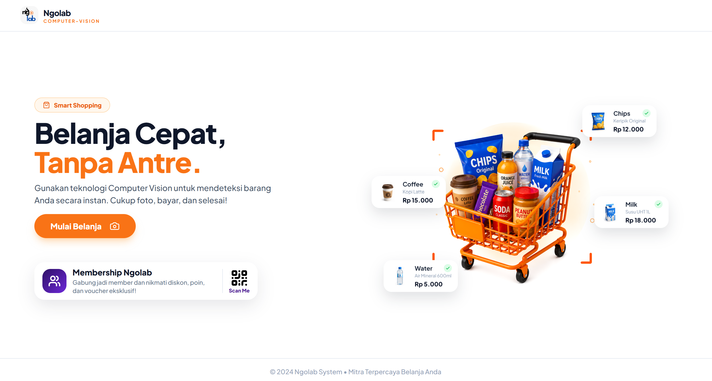
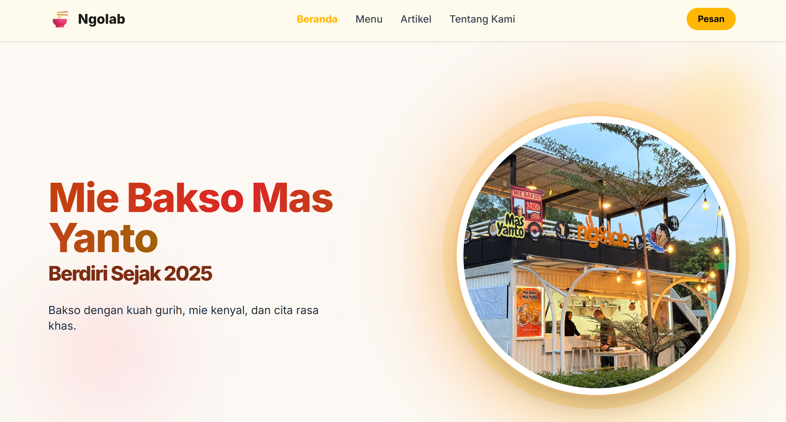
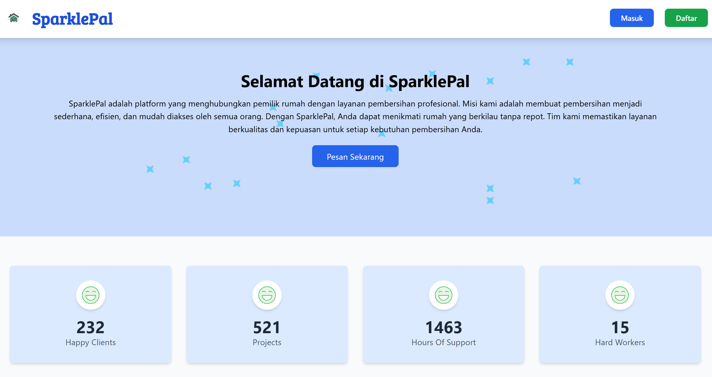

Web Development
Mengembangkan aplikasi web dan CMS sesuai kebutuhan sistem.
OPEN TO OPPORTUNITIES
Information Systems Graduate · Web Development · Database
Saya lulusan D3 Sistem Informasi yang tertarik pada pengembangan aplikasi web, pengelolaan database, dan sistem berbasis teknologi untuk menciptakan solusi digital yang bermanfaat.
Novita Wika
Rahmaningsih
Information Systems
01 / ABOUT ME
Saya lulusan D3 Sistem Informasi Telkom University dengan pengalaman sebagai IT Developer serta Quality Control di Research Alliance Ko+Lab Telkom University. Saya pernah terlibat dalam pengembangan CMS berbasis Laravel dan Filament serta sistem Auto Cashier berbasis Computer Vision.
Saya tertarik pada pengembangan sistem informasi, pengelolaan database, dan pemanfaatan teknologi untuk menciptakan solusi digital yang fungsional dan mudah digunakan.
02 / WHAT I WORK WITH
Teknologi dan kemampuan yang saya gunakan dalam proyek serta pengalaman kerja.
Mengembangkan aplikasi web dan CMS sesuai kebutuhan sistem.
Merancang struktur dan mengelola data untuk kebutuhan aplikasi.
Mengenal implementasi object detection untuk sistem otomatisasi.
Bekerja bersama tim dan menjaga komunikasi selama proses kerja.
03 / SELECTED WORK
Beberapa proyek yang menggambarkan pengalaman saya dalam membangun sistem dan aplikasi.

PROJECT / 01Platform kasir otomatis yang memanfaatkan YOLOv8 untuk mendeteksi produk secara real-time, dengan backend Node.js dan antarmuka React.

PROJECT / 02CMS berbasis Laravel dan Filament untuk mengelola data menu, promo, testimoni, dan informasi bisnis secara terpusat.

PROJECT / 03Website pemesanan jasa kebersihan menggunakan Laravel dan PHP, termasuk pengelolaan data pengguna, layanan, dan pemesanan.
04 / EXPERIENCE
Ko+Lab · Telkom University
Start-Up WarmingUp
Staff Acara & Staff Humas
05 / EDUCATION
Diploma in Information Systems
06 / GET IN TOUCH
Saya terbuka terhadap kesempatan kerja maupun magang di bidang IT untuk mengembangkan diri dan berkontribusi melalui pemanfaatan teknologi.
Hubungi saya via email ⬈